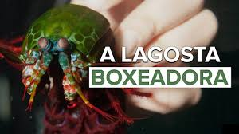
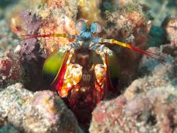

Fatos sobre o Stomatopoda
Características
O Odontodactylus scyllarus chamados popularmente de lacraias-do-mar no Brasil,
é uma ordem de crustáceos marinhos que agrupa cerca de 400 espécies, caracterizadas principalmente
pela morfologia da segunda pata torácica, lembrando uma pata de louva-a-deus.
Apresentam uma grande variação de tamanho, que pode ir de poucos milímetros até
aproximadamente 40 cm nas espécies maiores. Eles vivem em fundo consolidado, lodoso ou ainda
arenoso, onde cavam seus buracos ou aproveitam-se dos orifícios deixados por outros animais
para neles se instalar. São animais exclusivamente carnívoros, alimentando-se de camarões,
caranguejos, moluscos, peixes e até mesmo outros da mesma ordem. O segundo par de patas,
muito desenvolvido, é usado tanto para atacar a presa como para se defender.
Também conhecidas como esquilas ou lagosta-boxeadora, espalhadas pelas costas dos mares
tropicais e subtropicais. Além das patas, elas apresentam uma silhueta característica, devido
ao grande comprimento aparentemente de seu abdómen. Os ovos ficam ligados por uma massa
gelatinosa que a mãe carrega contra o ventre até que eclodem, limpando-os sem parar.
São animais que apresentam comportamentos sociais muito variados, desde ameaças
visuais contra predadores até comportamentos de côrte. De acordo com a anatomia da
sua pata raptorial é possível distinguir entre dois grupos funcionais, as
perfuradoras (spearers) ou as esmagadoras (smashers), sendo que cada um dos tipos
apresenta sua própria variação comportamental e até mesmo de habitat.
Estomatópodes podem ser encontrados em quase todo o litoral brasileiro, mas não são animais
fáceis de se observar pelos seus hábitos mais furtivos. Devem ser manuseados com muita
cautela pois são animais preparados para se defender com força, caso sejam incomodados.
| Reino | Filo | Subfilo | Classe | Subclasse | Ordem |
|---|---|---|---|---|---|
| Animalia | Arthropoda | Crustacea | Malacostraca | Hoplocarida | Stomatopoda |
Força
Exemplares de Odontodactylus scyllarus, são capazes de desferir um dos mais rápidos e violentos golpes do reino animal, um soco que pode apresentar a velocidade de um tiro calibre .22 e uma força de impacto de 60 kg/cm². Essa força esmagadora é a responsável pelo seu título de "lagosta-boxeadora" e é capaz de facilmente quebrar a carapaça de um caranguejo, as conchas duras e calcificadas de gastrópodes ou até mesmo quebrar o vidro reforçado de um aquário.
Visão
A maioria das pessoas tem três tipos de células de detecção de luz, ou fotorreceptores,
sensíveis à luz vermelha, verde e azul. Mas o Stomatopoda tem de 12 a 16
fotorreceptores diferentes em sua banda média.
São predadores ativos que caçam presas com o auxílio de um sentido de visão
muito apurado e capaz de interpretar polarização no espectro ultravioleta e infravermelho.
Defesa
O urópodo, quando aberto, funciona para defesa, como um escudo, fechando a galeria em que o animal esteja instalado. A fêmea desova no local onde se abriga e, em caso de perigo, enrola os ovos como uma bola, prendendo-os junto ao corpo até encontrar um abrigo mais protegido.
